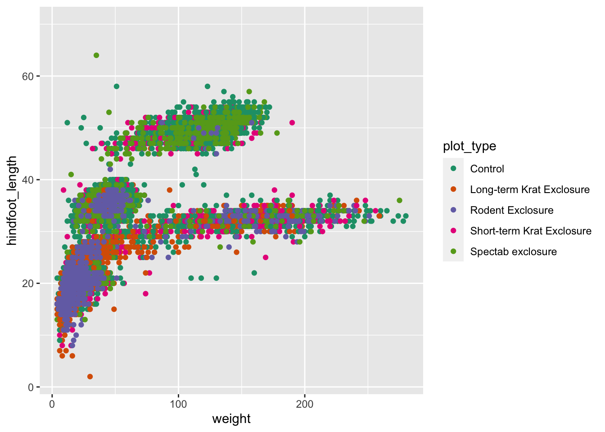
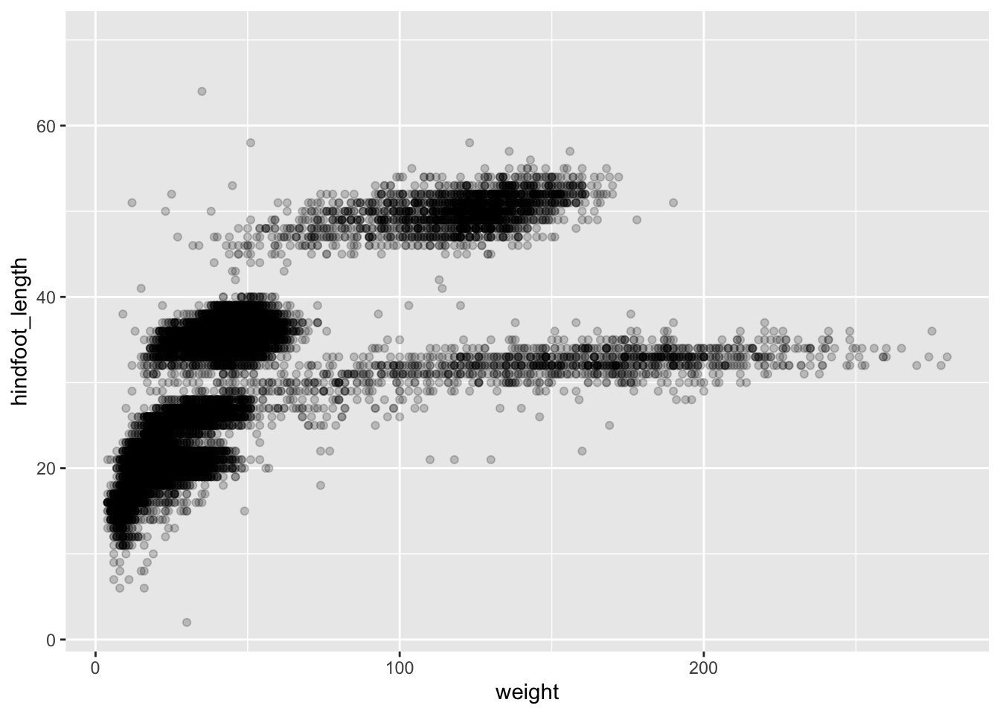
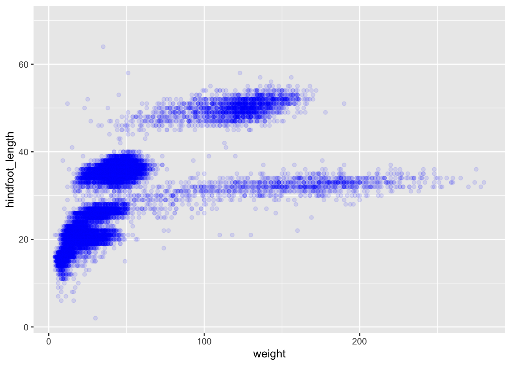
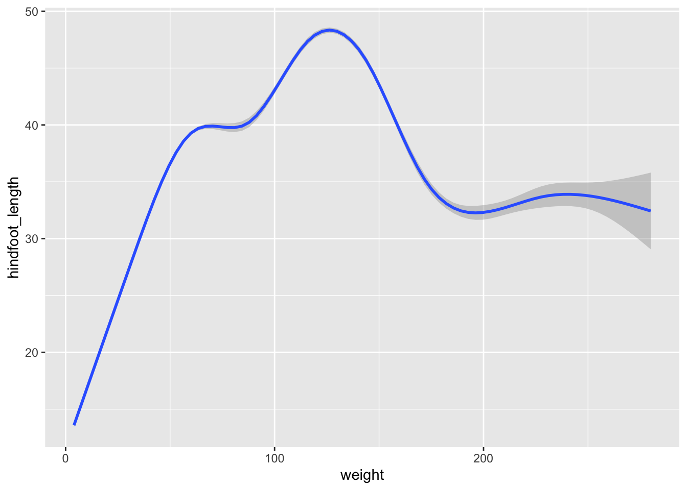

Data visualisation with tidyverse
Visualising data in R

Visualising is probably one of the most satisfying parts of doing data analysis. After all, who doesn’t like a nice plot? In tidyverse plotting is made very easy for us, using the ggplot2 package. ggplot2 is a very popular package used for plotting mainly due to its simple, modular way to create plots from tabular data.
To create a plot, we will use the following basic template.
ggplot(data = <DATA>, mapping = aes(<MAPPINGS>)) + <GEOM_FUNCTION>()As you can see there are 3 main elements that you need to create a plot:
The ggplot function takes 2 arguments:
- data: This is the data frame to attach to the plot. The data frame must contain the variables to plot as columns and the rows must contain the observations that you need to plot.
- mapping: Aesthetic mappings describe how variables in the data are mapped to visual properties of the plot.
Using the ggplot function on its own will not plot anything. We need to add a geom_function as a layer. Layers are added to plots by using +. They are added on top of the other previous layers that might be present.
- geom_function: This specifies the type of plot would you like to plot. The greatest advantage of this is that you can easily change the plot type by just changing the geom_function and keeping everything else the same. You can see a whole list of plots that you can plot here.
Let’s practice this on our surveys data set. We would like to create a scatter plot with weight on the x-axis, hindfoot_length on the y-axis
ggplot(data = surveys, mapping = aes(x = weight, y = hindfoot_length))
Adding layers
As you can see if you just specify the ggplot function with the data and aesthetic mappings, it will just create an empty plot. Let us now add the geom_function for the scatter plot (geom_point) as a layer to the plot:
ggplot(data = surveys, mapping = aes(x = weight, y = hindfoot_length)) +
geom_point()
You can customise some of the visualisations of the plot to extract more information from it. For instance, we can add transparency (alpha) to avoid overplotting:
ggplot(data = surveys, mapping = aes(x = weight, y = hindfoot_length)) +
geom_point(alpha = 0.1)
You can find a list of aesthetics for each type of plot in the ggplot2 cheat sheet.
We can also add colours for all the points:
ggplot(data = surveys, mapping = aes(x = weight, y = hindfoot_length)) +
geom_point(alpha = 0.1, colour = "blue")
If we would like to try other type of plots on the data, the best thing is to save the ggplot into a variable as below:
# Assign plot to a variable
surveys_plot <- ggplot(data = surveys,
mapping = aes(x = weight, y = hindfoot_length))
# Draw a scatter plot
surveys_plot +
geom_point()Now draw a geom_smooth plot. This plot is good when you need to see if there is any pattern between the two variables being plotted that you would not normally see in a scatter plot due to overplotting.
surveys_plot +
geom_smooth()
Rather than seeing each plot separately, sometimes plotting multiple plots on top of each other is a better way. You can add multiple plots as layers on top of each other as follows:
surveys_plot +
geom_point() +
geom_smooth()
Argument inheritance in plots
- Anything you put in the
ggplot()function can be seen by any geom layers that you add (i.e., these are universal plot settings). - You can also specify mappings for a given geom independently of the mappings defined globally in the
ggplot()function. - The
+sign used to add new layers must be placed at the end of the line containing the previous layer. If, instead, the+sign is added at the beginning of the line containing the new layer, >ggplot2will not add the new layer and will return an error message.
# This is the correct syntax for adding layers
surveys_plot +
geom_point()
# This will not add the new layer and will return an error message
surveys_plot
+ geom_point()Scatter plots can be useful exploratory tools for small data sets. For data sets with large numbers of observations, such as the surveys data set, over-plotting of points can be a limitation of scatter plots. We have already seen how we can visualise data better when we have over-plotting with the geom_smooth plot. Another way for handling over-plotting is to display the density of the data through contours. This is handled by the geom_density geometry. For this challenge do the following:
- Create a script called
plot_density2d.R - In this script, load the data from
data_raw/portal_data_joined.csvinto a variablesurveys. - Using
ggplot, plot theweighton the x-axis andhindfoot_lengthon the y-axis in and create ageom_density2dplot.
Answer
library(tidyverse)
# Load the surveys data
surveys <- read_csv("data_raw/portal_data_joined.csv")
# Attach data and map x and y axes
surveys_plot <- ggplot(data = surveys,
mapping = aes(x = weight, y = hindfoot_length))
# Draw geom_density2d
surveys_plot +
geom_density2d()Saving a plot to a file
To save a plot to file we use the ggsave function. If you look at the documentation of ggsave you can see the different arguments the ggsave function takes. Let’s save the plot present in the surveys_plot variable into a file called plot_weight_hindfoot_density2d.png and place this into the img_output folder within our working directory (check that it is present, if not you need to create it).
# Save plot that you would like to save into a variable
out_plot <- surveys_plot + geom_density2d()
# Save plot to file
ggsave(filename = "img_output/plot_weight_hindfoot_density2d.png", plot = out_plot)You do not need to save the plot into a variable before saving it to file. If you do not specify the plot argument of the ggsave function, ggsave will take the last plot that you plotted and save it into the filename specified.
# Save plot to file
ggsave(filename = "img_output/plot_weight_hindfoot_density2d.png")Alternatively, you can go to the Plots pane and click on the Export button. This can be easy, but makes the output less reproducible for other people.